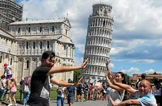
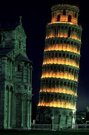

Enfants comme adultes, tout le monde a entendu parler de la Tour de Pise. C’est sans doute la première raison pour laquelle on vient visiter Pise, et c’est certainement la plus célèbre tour au monde. La tour de Pise est le campanile de la cathédrale Notre-Dame de l’Assomption de Pise, qui se trouve sur la Piazza dei Miracoli. Elle est réputée pour être penchée, d’un angle de 3,59 degrés vers le sud. La construction de l’édifice débute en 1173 et s’étale sur deux siècles. Dès la fin de l’ajout du troisième étage, vers 1178, la tour commençait déjà à pencher et la construction fut interrompue pendant 90 ans.
